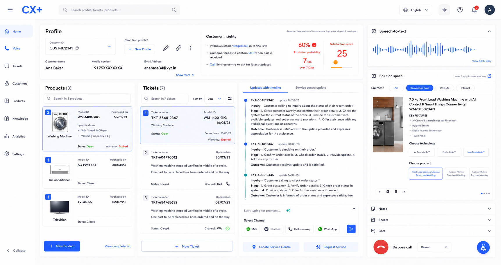
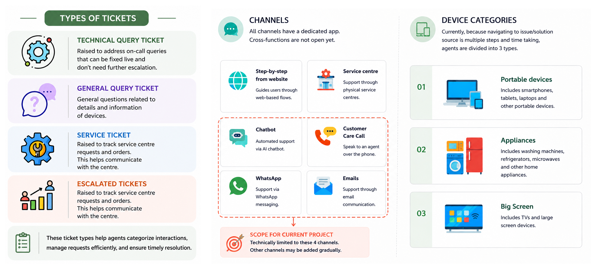
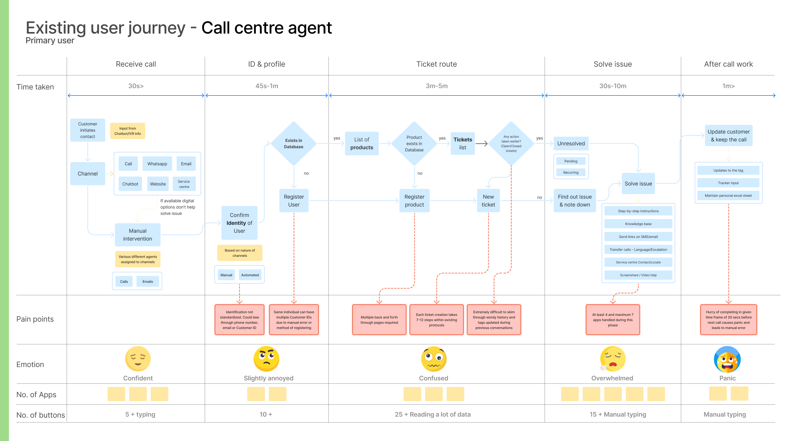
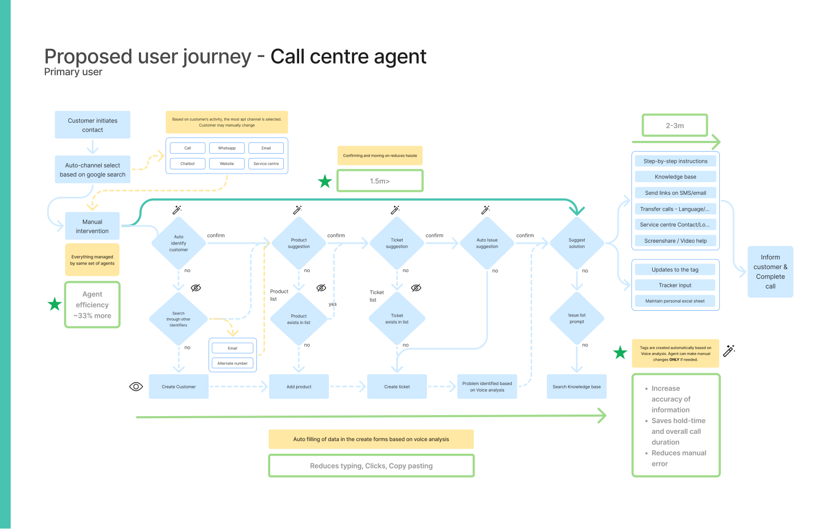
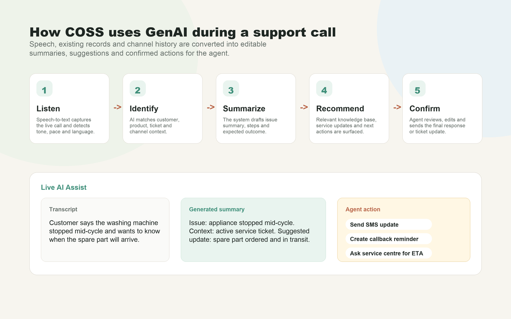
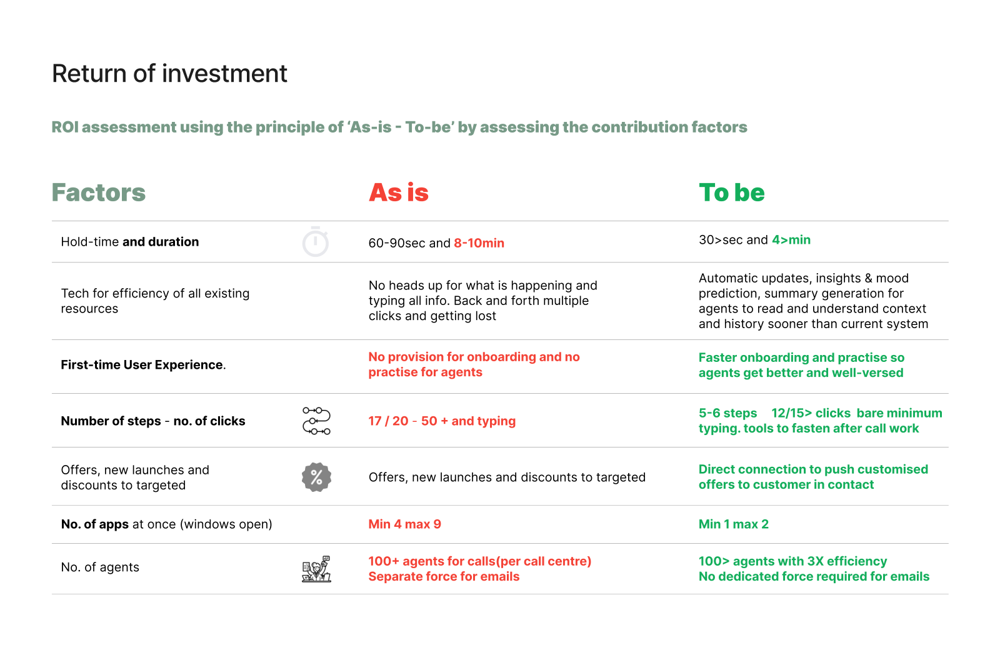

🧠 Reduce Cognitive Load
Decrease the effort required to gather information during live customer interactions.
Graduation Project · Samsung R&D Institute – Delhi
Reimagining customer support by helping agents navigate fragmented systems with contextual AI assistance.
Customer support agents operate in highly complex environments where resolving a single issue often requires navigating multiple disconnected applications, searching extensive knowledge bases, and documenting every interaction—all while maintaining fast, empathetic conversations with customers.
This project explores how Generative AI can augment—not replace—human expertise by reducing cognitive load, surfacing relevant information at the right time, and streamlining repetitive workflows across the support experience.

The Challenge
Supporting Customers Shouldn't Mean Managing Systems
Modern customer support extends far beyond answering phone calls.
Agents are expected to understand customer history, identify products, retrieve troubleshooting information, coordinate with service centres, communicate across multiple channels, and document every interaction—all within a single conversation.
However, the existing support experience depended on multiple disconnected internal systems. Information was fragmented, workflows were repetitive, and agents spent considerable effort gathering context before they could begin solving customer problems.
As Generative AI matured, this presented an opportunity to rethink how support systems could assist agents—not by replacing human expertise, but by augmenting it with timely, contextual intelligence.
Decrease the effort required to gather information during live customer interactions.
Bring together fragmented customer context, product information and support history into a cohesive experience.
Use AI to assist agents with recommendations, summaries and knowledge retrieval while keeping humans in control.
Before conducting field research, I mapped the customer support ecosystem to understand how customers, agents, internal tools, and service teams interacted throughout the support journey.

Different systems contributed different layers of context, creating a fragmented picture of the customer and their issue.

Rather than designing around assumptions, I immersed myself in the customer support environment to understand how agents actually worked, collaborated, and resolved customer issues.

To uncover the root causes behind inefficient support workflows, I combined ethnographic research, contextual inquiry, stakeholder interviews, workflow observation, and application analysis. This helped me understand both the visible workflow and the hidden operational challenges that agents experienced every day.
What we will emphasize during research.

After observing live customer support operations and speaking with agents, several recurring patterns emerged. These insights became the foundation for every design decision that followed.


Customer information was scattered across multiple internal applications.
Create a unified workspace with contextual information.
Agents constantly switched between applications while helping customers.
Reduce navigation and surface information proactively.
Agents repeatedly typed summaries, notes and ticket updates after every interaction.
Use AI-assisted summarization and automatic note generation.
Finding the correct troubleshooting information often interrupted conversations.
Context-aware AI recommendations from the knowledge base.
New agents relied heavily on senior colleagues and internal documentation.
Provide guided workflows and contextual assistance.
Customer history was fragmented across calls, emails and messaging platforms.
Create an omnichannel customer timeline.
The research uncovered many usability issues, but not all of them required AI. The next step was identifying where Generative AI could genuinely reduce effort while preserving human decision-making.
| Research Insight | Opportunity | Design Response |
|---|---|---|
| Customer information is scattered across multiple systems. | Reduce information fragmentation. | Unified customer workspace with contextual information. |
| Agents repeatedly search documentation during live calls. | Surface relevant knowledge automatically. | Context-aware AI recommendations. |
| Documentation consumes significant time after every interaction. | Reduce repetitive manual work. | AI-generated summaries and ticket updates. |
| Customer history is fragmented across channels. | Provide complete interaction history. | Unified omnichannel customer timeline. |
| New agents require constant support. | Lower onboarding effort. | Guided workflows and AI assistance. |
The research revealed that agents didn't need another application—they needed a smarter way to work across the tools they already used. The solution introduces an AI-powered assistance layer that brings fragmented information together while keeping agents in control.
Displays customer profile, products, tickets and history in one place.
Provides contextual recommendations, summaries and troubleshooting guidance.
Consolidates customer interactions across calls, chat, email and service requests.
Everything about the customer in one place.
Speech-to-text and contextual understanding.
Relevant troubleshooting recommendations.
History from every support channel.
Automatic summaries, notes and ticket updates.
Quick actions without leaving the current workflow.
The proposed flow reduces copy-pasting, repeated searching, manual ticket work, and channel restarts by identifying customer, product, ticket, and issue context earlier in the call.

The final concept was documented through three key UX moves: auto-fill and auto-summary, consolidation, and simplified experience.
GenAI reduces typing by turning speech and available records into editable summaries, tags, issue prompts, and profile or ticket fields.
Profile, product, ticket, channel, history, and service data are brought into one place so agents do not need to switch windows for every call.
Progressive disclosure keeps the workspace focused, while specialist tools such as video, screen share, service centre, and tracker actions remain accessible.

ROI was assessed by comparing the as-is and to-be flows across handling time, number of apps, clicks, onboarding, manual typing, and agent staffing.

The deck closes with opportunities to extend the system into commerce, self-service, chatbot, IVR, and demographic-aware communication.
Bring e-shop, sales, service, shopping, knowledge base, and accumulated customer data into fewer places instead of separate tools.
Use GenAI in chatbot and IVR experiences for better language, dialect, pace, pitch, demographic context, and DIY troubleshooting through video call or screen-share guidance.